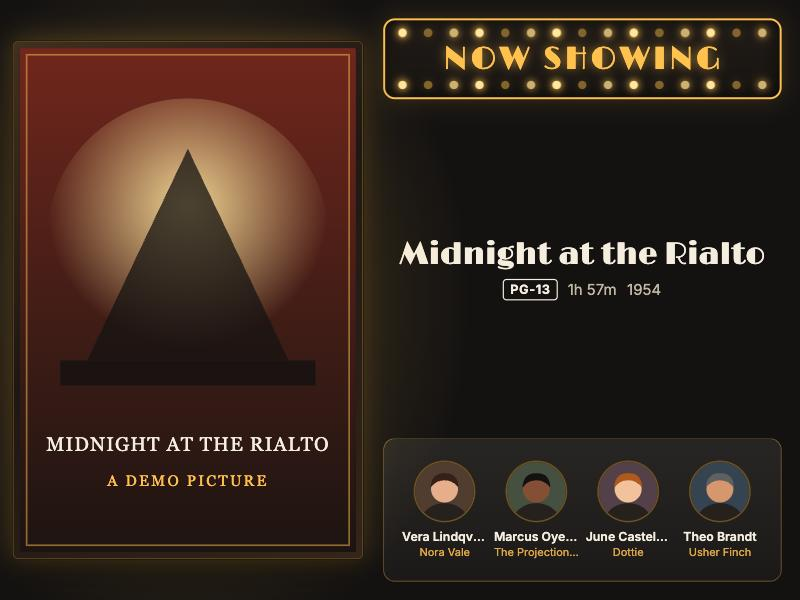

The demo runs right in your browser. Its titles and people are made up.
Set it up in a few minutes
- Install Node.js. It is free. Get the LTS version from nodejs.org for the computer that runs Plex, or any computer that stays on.
- Download PosterLight and unzip it. Double-click
start-windows.baton Windows orstart-mac.commandon a Mac. - Sign in with Plex on the page that opens. PosterLight never sees your password.
- Open the address it shows on your tablet, and add it to the home screen.
Read the full guide, with steps for iPad, Android, Fire tablets, Linux, and Docker.
What it does
- A real marquee. Chasing bulbs, a lit poster frame, and an Intermission sign when you pause.
- Facts while you watch. Up to 15 per movie and 3 per episode, timed across the runtime.
- Old devices welcome. It runs on an iPad Air 1 with iOS 12, newer iPads and iPhones, Android, and Fire tablets.
- Easy on the screen. It dims after 3 minutes, wakes on a tap, and drifts slowly to prevent burn-in.
- Every screen in step. Several tablets can follow the same player and show the same fact.
What you need
- A Plex Media Server that you own.
- A computer that stays on, on the same home network: Windows, Mac, Linux, or a NAS.
- A spare tablet or phone on the same Wi-Fi.
Why is there something to install? PosterLight runs in your home, next to your Plex. Your Plex token stays on your own computer and is never sent to this website or to anyone else. That is also why this site can show a demo, but not your own library.
Help make it better
The facts come from a shared pack that anyone can add to. Add facts for a title, or report a problem.